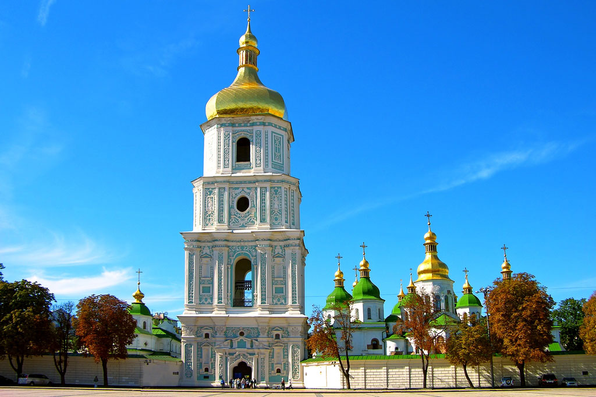

В 1046 году великий князь Ярослав Мудрый и княгиня Ирина (Ингигерда) направились в Новгород из Киева к сыну Владимиру на закладку им Софийского собора. Собор был заложен в Детинце на месте Владычного двора и строился примерно до 1050 года вместо сгоревшего перед этим 13-главого деревянного храма «из дуба о 13 верхах» 989 года, однако не на том же месте, а севернее. Освящён собор был по данным разных летописей в 1050 или 1052 году епископом Лукой Жидятой. Храм имел пять нефов и три галереи, в которых располагалось несколько дополнительных престолов. Северная галерея несколько раз перестраивалась.